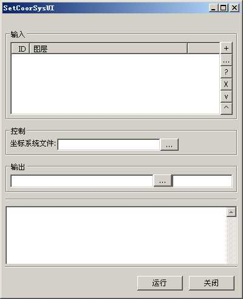

SetCoorSys是一个设置矢量栅格数据空间参考的工具（不是配准，只是设置坐标系）。该工具由linux_23(李林)编写。。
实用类：geosings.tools.SetCoorSys.*
UI控制面板类：geosings.tools.ui.SetCoorSysUI.SetCoorSysUI
运行主界面如下：

主界面分为四个部分。一个是图层输入面板，一个是控制参数面板，一个是图层输出面板。一个是过程输出显示面板。
图层输入面板和图层输出面板的介绍可以看链接文档。最主要的核心在于控制 面板。
| 坐标系统文件 |
坐标系统的wkt表达文件（Prj文件） 在$GSS_HOME的srs目录下有PostGIS中预定义所有的坐标系统文件（需要用7zip解压），其中包含了大多数常用的坐标系统，几乎够用了。 |
请注意：由于矢量数据不支持直接设置坐标系统，所以只能使用拷贝数据集来做，所以我们需要把设置了坐标系统的文件直接拷贝到另外一个文件夹下。这里的输入可以使用多个图层，输出只要指定与输入图层所在文件夹不同的文件夹就可以。不需要指定输出数据集名称（指定了也没用）。输出是和输入不同文件夹下的同名文件。如果输入和输出指定同一个文件夹，则会出错。
| geosings, RasterSpliter | 返回主目 录 |